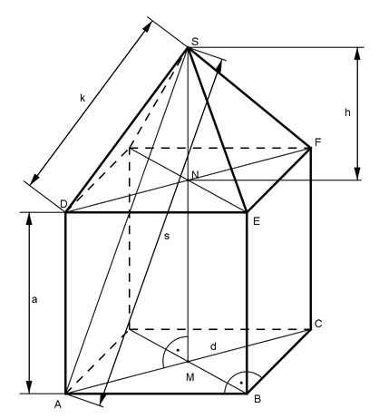

Pythagoras Aufgabe 54 Einem Würfel mit der Seitenlänge a = 4 cm ist eine Pyramide aufgesetzt mit der Seitenlänge k = 3 cm. a) Berechnen Sie die Höhe h der Pyramide in cm. b) Wie weit in cm ist die linke untere Ecke des Würfels von der Spitze der Pyramide entfernt?  a) Satz von Pythagoras im Dreieck ABC: AB = BC = a d² = a² + a² d² = 4² cm² + 4² cm² = 32 cm² |√ d = 5,66 cm Satz von Pythagoras im Dreieck DNS: DN = d/2 = 5,66/2 cm = 2,83 cm d d k² = h² + (---)² |-(---)² 2 2 d h² = k² - (---)² 2 h² = 3² cm² - 2,83² cm² = 0,99 cm² |√ h = 1 cm b) Satz von Pythagoras im Dreieck AMS: AM = d/2 MS = a + h = 4 cm + 1 cm = 5 cm d s² = (a + h)² + (---)² 2 s² = 5² cm² + 2,83² cm² = 33 cm² |√ s = 5,7 cm